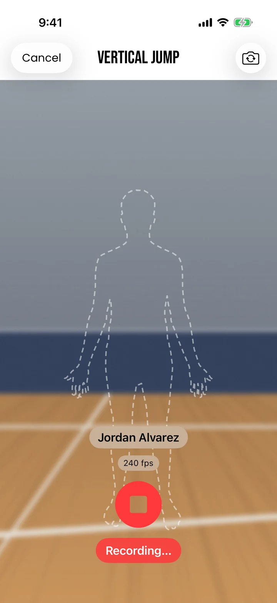
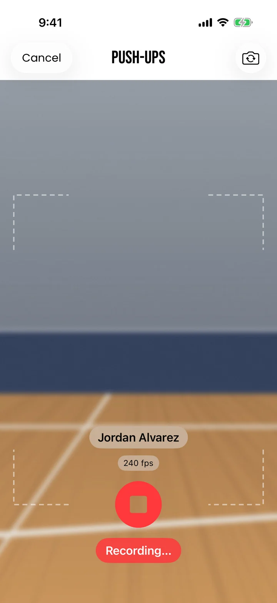
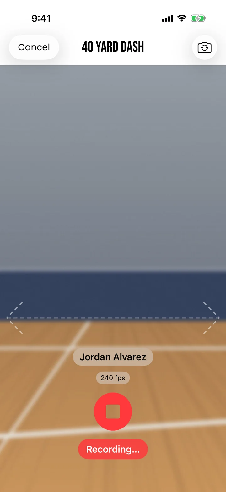
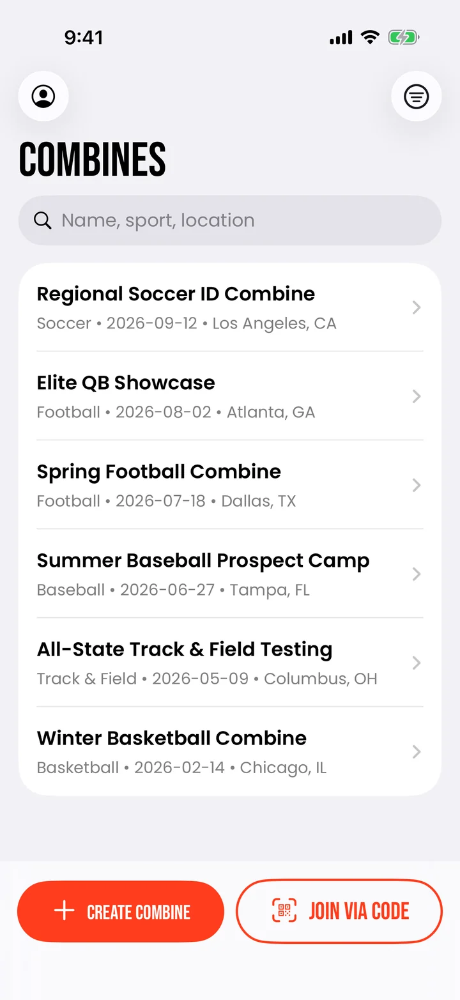
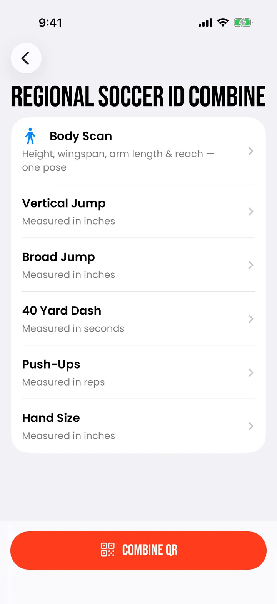
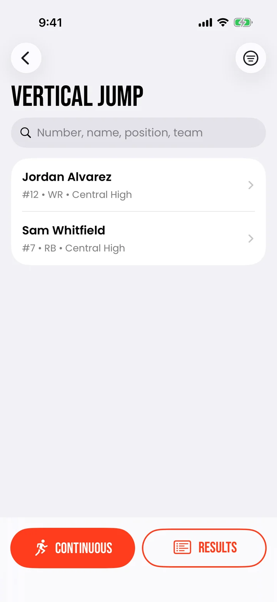
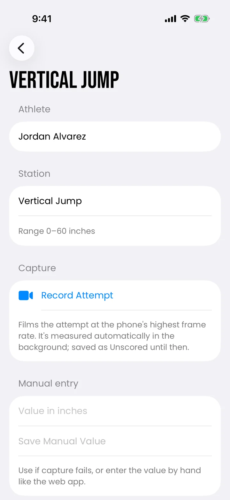
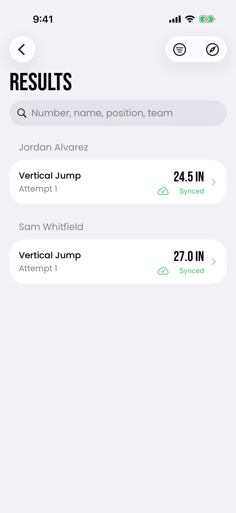

Reimagining the Combine
I researched, designed, and built an iPhone app that automates the combine.
- Role
- UX Engineer Intern
- Methods
- Field observation, coach interviews, user testing
- Built with
- Swift, SwiftUI, ARKit, Apple Vision
- Status
- Set to release by EXACT Sports in iOS and Android
TL;DR
- The question
- Can we improve the way that combines are run over manually writing each athlete's results?
- What I did
- Watched a combine, talked with coaches, then designed and built the beta version of the iPhone app.
- What came out of it
- An app that uses speech recognition and computer vision to self-measure and run various stations at a combine.



The problem
Traditionally, coaches use pen and paper to track combines. Combines are events where athletes do different tests to evaluate their physical skill, like a 40-meter dash, a vertical jump, or long jump. At combines, it's typical to have one coach's job solely be writing numbers down.
The paper sheets then went to EXACT, where staff transcribed and typed every result. This has a huge amount of friction for both EXACT and the coaches: it forced dull, repetitive transcription work, forces coaches to transport the data, and frequently, coaches forgot to pass this essential data on.
Is there a better way where coaches are free to coach, and data arrives already digitized?
Research
I went to an EXACT combine in Wisconsin. I watched how each station ran, took notes on where time and accuracy slipped, and talked with coaches about their frustrations and about the idea of an app doing the measuring.
Apple's AR tools turned out to have real limits. The back camera is better measuring at a distance, whereas the front camera was necessary for precise, close measurements. As a result, some stations needed their own setup instead of one shared approach. My takeaway was that a good approach when integrating technology is to consider its limitations early and design around them.
What I built
Coaches can pick across different combines, stations, and athletes all in one app.



A continuous mode lets one coach run a whole line of athletes hands-free: the app identifies each athlete by their spoken name or jersey number. In addition, since Wi-Fi on the field is spotty, it's saved locally and reinforced in the cloud when a connection becomes available.


Design decisions
I wrote the experience down before building it. I built the app with Claude Code as a coding partner, since I had limited experience with Swift and Apple Vision. Although AI-written code can be very powerful, it lacks the intuition for ease-of-use that a human has. To mitigate this, I wrote out the user flow and the rules each screen had to follow, and held every build to that spec. Every station works the same way, so even as new features and refinements were added, the app stayed usable and focused.
Refining and optimizing measurements took trial-and-error. My first version tracked the athlete's body with ARKit, which tracks body movement. Body tracking only works with the phone held sideways, and it initially measured from ankle to ankle instead of the official toe to heel in real combines. I switched to finding the feet in the video and placing them on the floor the phone had detected, then corrected the reading based on adjustments from field tests.
In contrast, for vertical jump, implementation was more straightforward. The app times how long the athlete is in the air, and physics turns that time into jump height. Because it needs no calibration, it was the most reliable station from the start. This taught me that design decisions can reframe technical difficulties.
Testing
EXACT staff and I tested the app all the way through the build, not just at the end, so flaws could be squashed early before polishing unnecessary features.
The biggest hurdle was measurement accuracy. I recorded real jumps and built replay tests that run each recording back through the measuring code, so a change that broke a reading showed up right away, even when physical testing was difficult.
Outcome
The app is still in development. EXACT is porting it to Android and building more stations on top of the ones I introduced.
Next time, I'd test the hardware's limits in week one. The camera differences shaped several stations, and knowing them before designing would have saved rework. I'd also track the time for the paper-based station, to see how much the digital implementation improved.